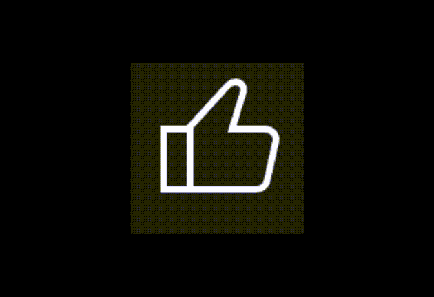
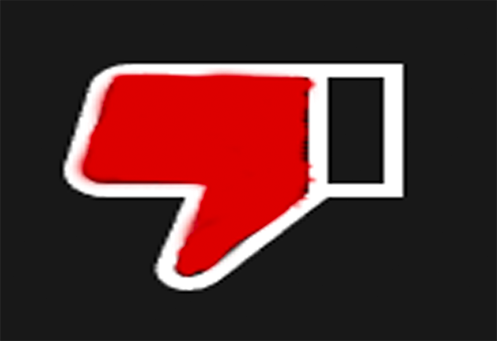
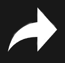
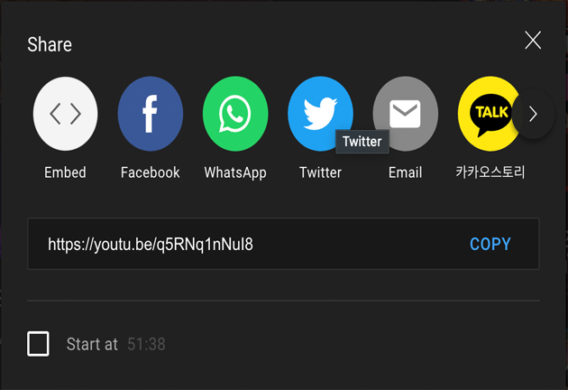

Youtube Like/Dislike/Share Microinterations
YT Final Concepts

Final Build Concept 1

Final Build Concept 2

Final Build Concept 3

Final Build Concept 4

Url
Triggers
-Hover
-Click
Rules
When hovering on the share button, the share button goes into a 360 degrees rotating animation for half a second.
-Upon clicking the share button, a box pops up to show the different ways to share
-Color changes for like and dislike upon click, with animations for each icon.
Feedback
-Make the like counter higher after the like/dislkie click,
-When clicking the like button, the counter next to it goes up, making the thumbs up enlarge and turn green, then resize to its original size
-When clicking dislike, the icon moves down and rotates, filling the icon red, then resizing back to its original state.
Loops
-none
Modes
-Share popup